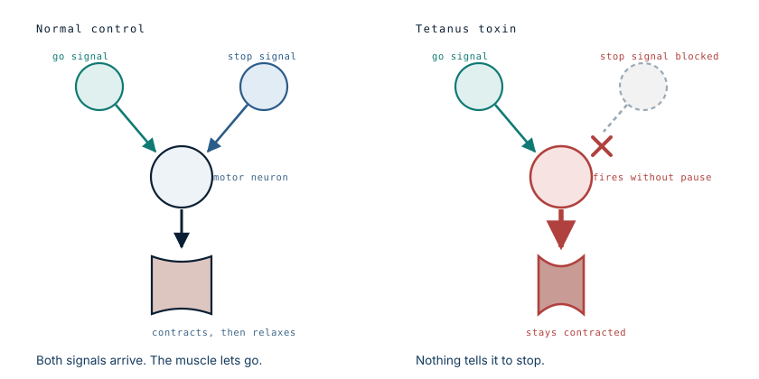
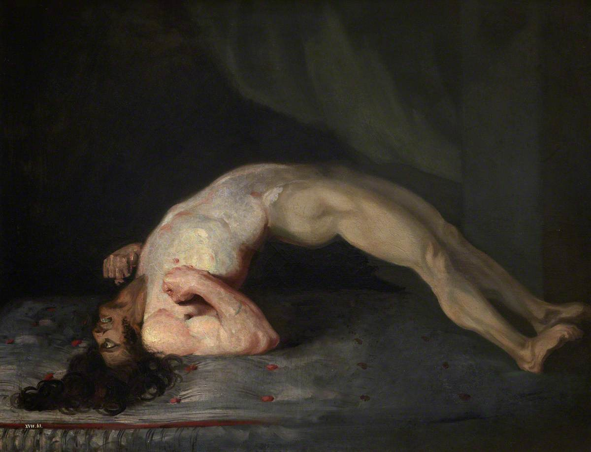

The wound was cleaned. She still got tetanus.
A six-year-old cut her arm on a sharp piece of wood. Her family took her to the emergency department, where the wound was washed with antiseptic and she was sent home with an antibiotic. Everything about that is reasonable, and one thing was missing.
- Specialty
- Paediatrics, intensive care, infectious disease
- Patient
- Girl, 6
- Immunisation
- Incomplete — one dose of pentavalent vaccine
- Injury
- Penetrating wood splinter, right arm
- First treatment
- Antiseptic wash, oral antibiotic, discharged home
- Onset
- 10–11 days later: fever, muscle pain, generalised spasms
- Course
- Paediatric ICU, ventilated, sedated, muscle relaxants
- Outcome
- Survived; mild motor sequelae, resolved over 2 years of rehabilitation
If you have a wound and are unsure, now
- Washing a wound does not cover tetanus. They are two separate steps.
- Deep or dirty puncture wounds carry the highest risk, especially from wood, soil or animal contact.
- The question that decides it is how many tetanus doses you have had. If it is fewer than three, or you do not know, say so.
- Assessment takes minutes and can be done at any urgent care or GP.
This is general information, not advice about your own treatment. Full disclaimer.
- day 0splinter, ED visit
- days 1–10nothing at all
- day 11spasms begin
- +weeksintensive care
- 2 yearsfull recovery
Why cleaning is not enough
Clostridium tetani lives in soil and in animal and human faeces, as spores that survive for years and tolerate drying, heat and most disinfectants. Wood lying outdoors carries them. A splinter drives them into tissue.
What matters next is not how many bacteria there are. It is the environment they land in. Tetanus spores only germinate where there is no oxygen, which is exactly what a deep puncture wound provides: a narrow tract that closes over, with damaged tissue at the bottom of it. The bacteria that grow there stay local and never invade. They produce a toxin, and the toxin does everything.
This is why washing the surface does not settle the question. The spores are already at the bottom of the tract, in the one place antiseptic does not reach. And it is why the oral antibiotic did not help either: by the time symptoms appear, the toxin is already bound to nerves, and killing the bacteria does not remove it.
What the toxin does
Tetanospasmin travels up nerve fibres to the spinal cord, and there it interferes with one specific thing: the neurons whose job is to say stop.
Muscle control depends on balance. Motor neurons receive signals telling them to fire, and signals telling them to release. The toxin blocks the release of the inhibitory transmitters, so the stop signal never arrives.

Everything else follows from that. The jaw muscles are strong and constantly used, so they lock first — trismus, the inability to open the mouth. The facial muscles pull into a fixed grimace. And when every muscle in the trunk contracts at once, the powerful extensors of the back overpower the abdominal muscles, so the body arches backwards. That posture, opisthotonus, is what most people recognise from photographs, and it is not a seizure. The child is fully conscious throughout.

The incubation period is the warning
Ten to eleven days passed between the splinter and the first symptoms, and that gap is the reason tetanus catches people out. The injury has healed over. Nobody connects a locked jaw to a splinter almost a fortnight earlier, and often the original wound is never found at all.
It also means the diagnosis is clinical. There is no test that confirms tetanus quickly. It is made from the picture and the vaccination history, which is exactly how it was made here.
What should have happened at the first visit
Wound cleaning is one half of tetanus prevention. The other half is deciding whether the patient needs a vaccine dose, immunoglobulin, or both — and that decision turns on two things: how dirty the wound is, and how many doses of tetanus vaccine the patient has had.
| Vaccine history | Clean minor wound | Dirty or puncture wound |
|---|---|---|
| 3 or more doses, recent | Nothing needed | Nothing needed |
| 3 or more doses, last one long ago | Booster if over 10 years | Booster if over 5 years |
| Fewer than 3 doses, or unknown | Vaccine dose, start the course | Vaccine dose and immunoglobulin |
This patient sat in the bottom right cell. One dose of pentavalent vaccine is fewer than three, and a splinter driven into an arm is a dirty puncture wound. She needed the vaccine and the immunoglobulin at that first visit, and she received neither.
The immunoglobulin is the part that matters most in that situation, because it is not a vaccine. It is ready-made antibody, and it works immediately, mopping up toxin before it reaches nerves. A vaccine dose asks the immune system to build a response over weeks, which is too slow when the exposure has already happened.
The failure here was not a lack of access. She reached a hospital the same day and was treated by clinicians who did the obvious things correctly. What was missing was the question that determines the whole outcome: how many tetanus doses has this child actually had?
What treatment looks like once it starts
By the time she was admitted she was deteriorating neurologically. She was taken to paediatric intensive care, ventilated, sedated and given muscle relaxants — because the spasms themselves become the emergency. They can close the airway, break bones, and exhaust the respiratory muscles.
The rest of the treatment followed WHO recommendations: penicillin and metronidazole to kill the remaining bacteria, tetanus toxoid to build immunity for the future, and high-dose tetanus immunoglobulin to neutralise circulating toxin. Note that she still received the toxoid: surviving tetanus does not make you immune to it, because the amount of toxin needed to cause the disease is too small to provoke a lasting immune response.
Recovery is slow because the toxin's effect only ends when the affected nerve terminals regenerate. She was discharged with mild motor problems that resolved over two years of follow-up and rehabilitation.
What this case teaches
Wound care and tetanus prophylaxis are two separate interventions, and doing the first well does not cover the second. The decision needs only two pieces of information — the nature of the wound and the number of prior vaccine doses — and in a child with an incomplete schedule and a dirty puncture wound, it points clearly at immunoglobulin. She survived and recovered fully, after intensive care and two years of rehabilitation, from something that a single injection at her first hospital visit would very likely have prevented.
Written from Cejudo-García de Alba MP, Valle-Leal JG, Sánchez Beltrán JG, Vázquez-Amparano AJF, “Tétanos, una enfermedad vigente en población pediátrica: reporte de un caso,” Revista Chilena de Pediatría 2017;88(4):507-510, and from WHO guidance on tetanus prevention and management. Photographs from the source case are not reproduced here. The 1809 painting by Sir Charles Bell is in the public domain and is available from Wikimedia Commons. The prophylaxis table is a simplified summary of standard guidance; national schedules differ, and it is not a substitute for clinical assessment. The diagram is original to MedicaseHub and may be reused freely. This article is not medical advice. If you have a wound and are unsure of your tetanus vaccination status, ask a clinician — the assessment takes minutes. Read the full disclaimer.